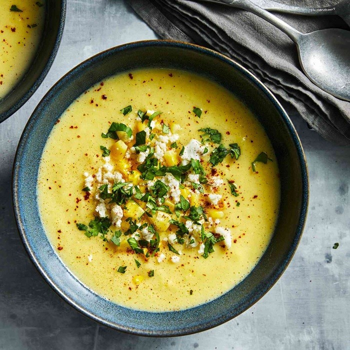
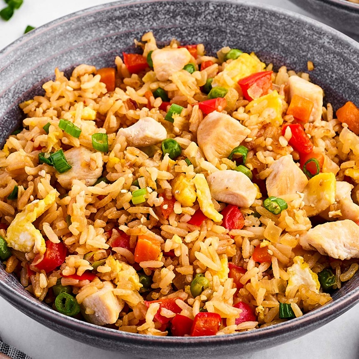
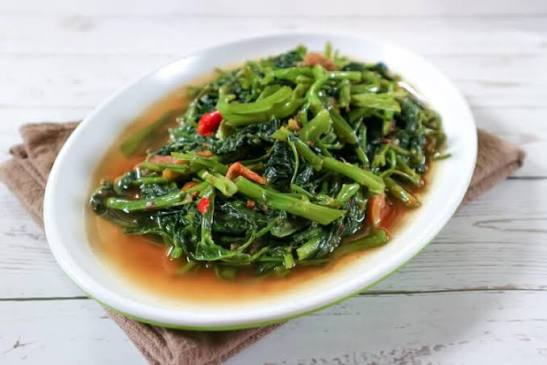
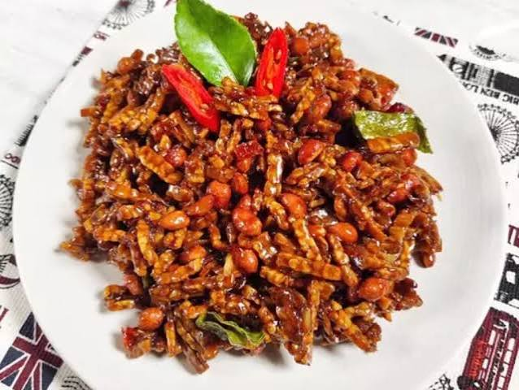
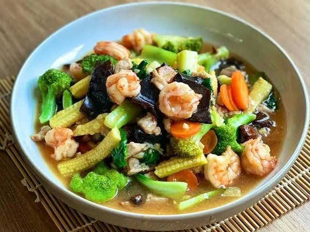
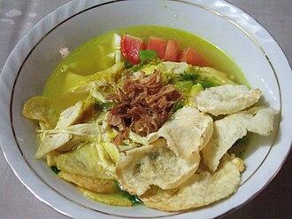

Apa yang ada
di dapurmu?
Jadikan hidangan
istimewa.
Punya bahan tersisa? Temukan masakan rumahan yang enak, praktis, dan cocok dengan isi dapurmu.
Geser foto untuk cari inspirasi masakan berikutnya.
3 Langkah Mudah Masak
dari Sisa Dapur
Pilih bahanmu
Foto bahan yang tersisa atau ketik namanya, seperti jagung, wortel, atau ayam.
Masukkan bahan yang ada
Periksa daftar bahan, lalu ubah atau lengkapi kalau ada yang kurang tepat.
Dapat Resep & Masak!
Dapatkan rekomendasi resep dari bahan yang kamu punya. Tanya Chef Resepin untuk variasi, pengganti bahan, dan tips memasak.

Sup Jagung Wortel

Nasi Goreng Sederhana

Tumis Kangkung Terasi

Tempe Orek Pedas

Capcay Kuah Segar

Soto Ayam Bening
Tambah bahan dapur
Arahkan kamera ke bahan makanan; hasil pindai bisa kamu periksa dan koreksi
Kamera mengenali beberapa bahan umum. Kamu bisa melengkapi daftar secara manual.
Bahan pilihanmu
0 bahanBelum ada bahan.
Gunakan kamera atau tambahkan sendiri.
+ Tambah Manual
🍜 Semua Resep
Temukan resep terbaik dari bahan yang kamu punya
Chef Resepin
Siap membantu di dapurJelajahi Resep
Temukan inspirasi masakan dari berbagai kategori